01钩子 / 问题
先用二维到三维完成视觉钩子
开场直接展示平面设计变成立体粘土模型，并用‘头皮发麻’强化惊奇，不解释原理。
简单画几笔二维草图，AI 就能实时生成三维模型，让非专业用户参与角色、场景和电商模型设计。
这条17秒视频几乎是纯效果证明：二维到三维的变化足够直观，收藏略高于点赞；但工具名、步骤和功能真实性都留给评论区，形成‘看懂结果、不会行动’的中位状态。
简单画几笔二维草图，AI 就能实时生成三维模型，让非专业用户参与角色、场景和电商模型设计。
不是复述内容，而是标出每一段承担的叙事任务、观众问题和画面证据。
开场直接展示平面设计变成立体粘土模型，并用‘头皮发麻’强化惊奇，不解释原理。
她强调3D不再是高门槛技术，简单在左侧画草图，右侧就实时变成三维艺术品。画面本身承担主要证明。
结尾把用途扩展到游戏角色、场景和电商模特，随后说工具已打包、评论区见。正文没有说明工具名和实际步骤。
下列章节覆盖视频的主要论点、步骤与结果；每段都保留时间码和关键画面。
开场直接展示平面设计变成立体粘土模型，并用‘头皮发麻’强化惊奇，不解释原理。
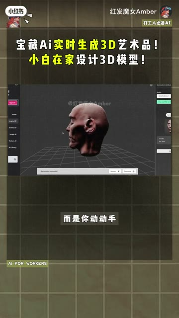
她强调3D不再是高门槛技术，简单在左侧画草图，右侧就实时变成三维艺术品。画面本身承担主要证明。
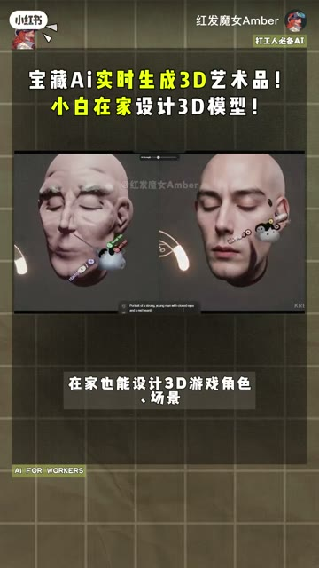
结尾把用途扩展到游戏角色、场景和电商模特，随后说工具已打包、评论区见。正文没有说明工具名和实际步骤。
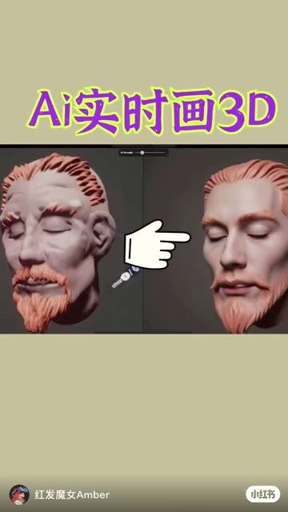
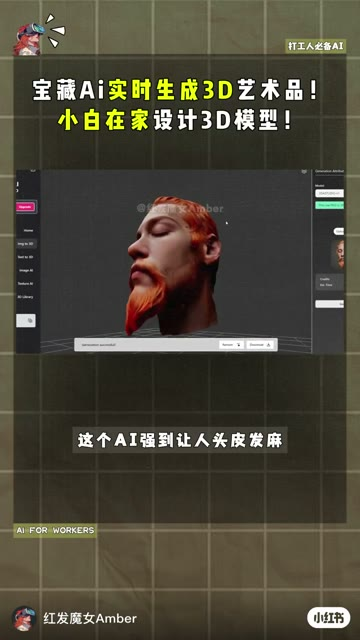
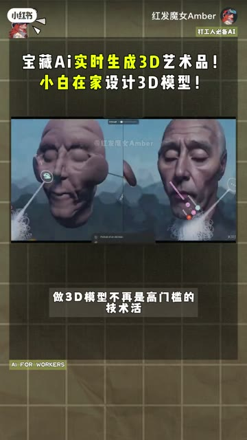
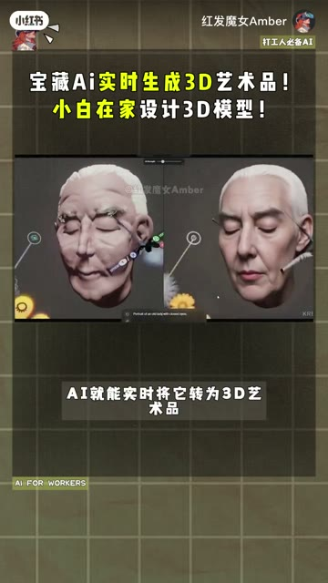
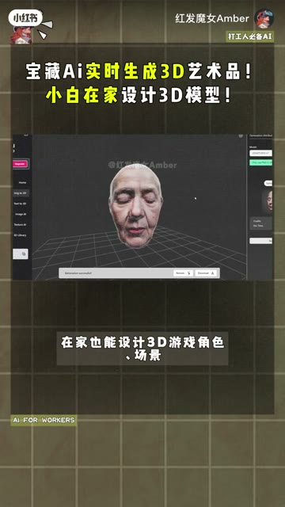
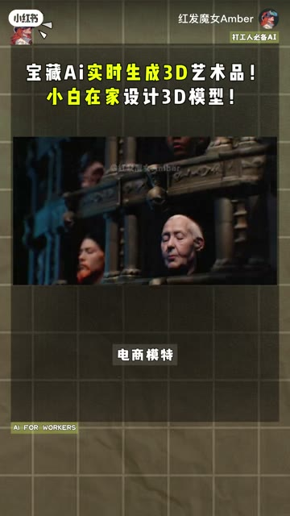
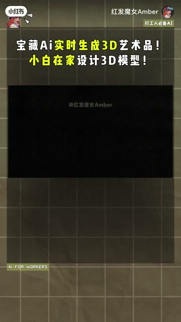
短视频每 1 秒、常规视频每 2 秒、超长视频每 3 秒取一帧。
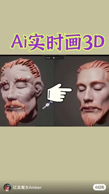
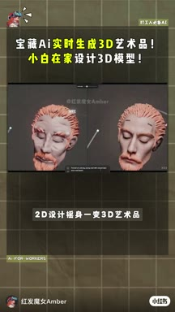
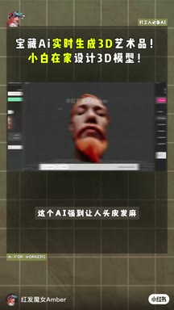
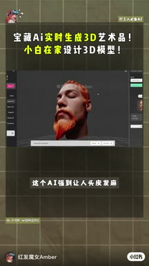
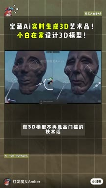
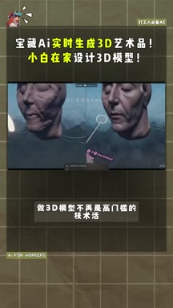
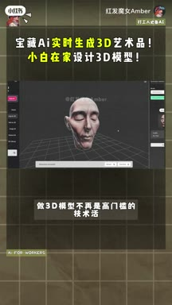
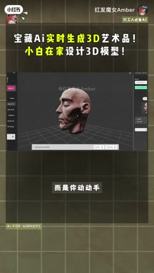
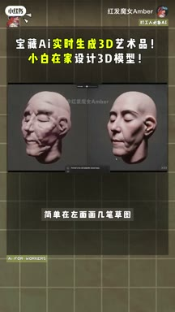
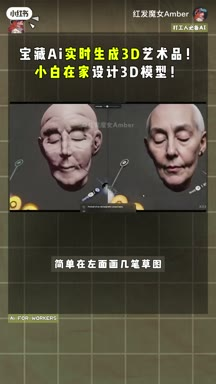
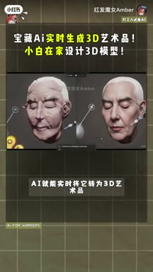
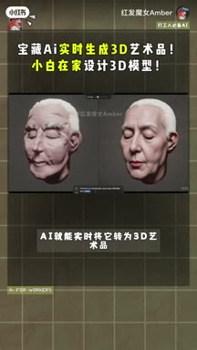
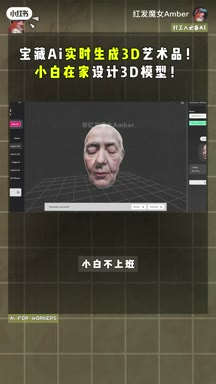
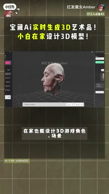
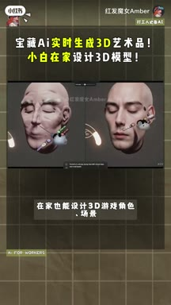
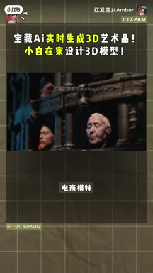
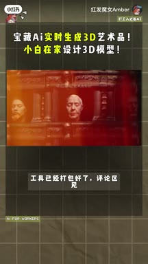
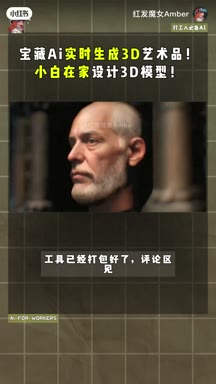
小红书官方 zh-CN 字幕 · 5 段 · 111 字。字幕只记录声音；工具名、界面文字和结果含义必须结合上方视觉知识地图复核。
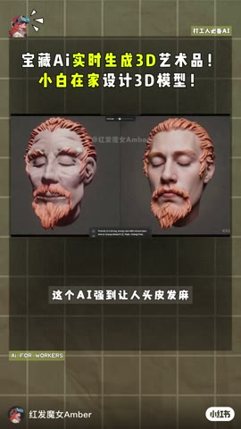
二d设计摇身一变三d艺术品，这个ai强到让人头皮发麻
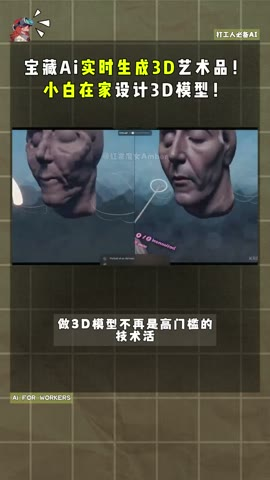
做三d模型不再是高门键的技术活
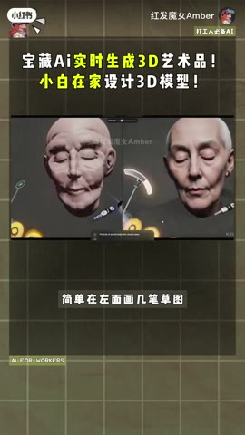
而是你动动手，简单在左面画几笔草图，Ai就能实时将它转为三d艺术品
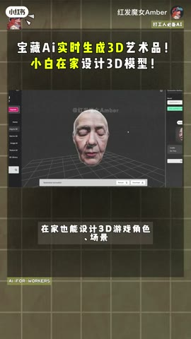
小白不上班。在家也能设计三d游戏角色场景
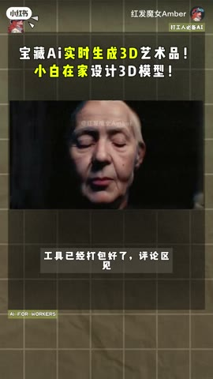
电商模特工具已经打包好了，评论区见
视频只展示一次视觉结果，无法证明复杂模型质量、拓扑可编辑性、导出格式或实时稳定性；评论出现‘功能不存在’质疑，工具版本需复核。
打开小红书原帖 ↗